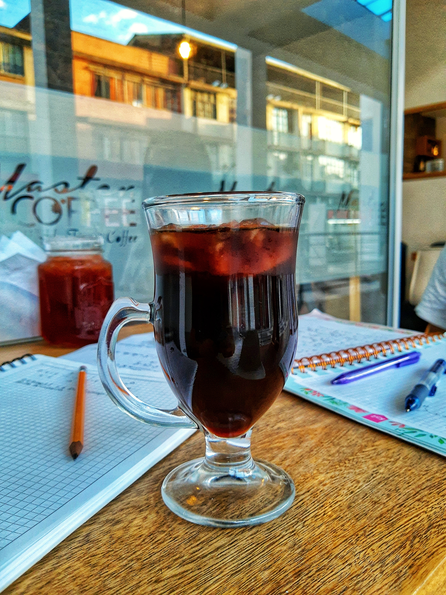

The elixir for those who love the intensity. Its deepest flavors will bring to your mouth the coolness that makes you feel alive.
December 29th, 2019 by Dorian Bodnariuc
Cold brew is a coffee brewing method, in which the brewing takes place at low temperatures ranging from room temperature or colder. The method involves steeping coffee grounds in cold water, in order to preserve volatile compounds and avoid
extraction of substances that soluble at high temperatures. Commonly, cold brewing is done for extended periods of time, to compensate for the low temperatures.

Benefits
- Cold brew is less acidic than traditional iced coffee. When brewing with hot water, more acids are extracted, and this gives coffee the rich flavor and bold profile. For some coffee lovers this is a good thing. Other people find the taste flat. It depends on your palate.
- Cold brew has a lower acidity, as we said, is naturally sweeter, and it is less bitter than hot brew.
- Cold brew is more stable than hot coffee. It can be bottled, or kept in the fridge for days without any chemical changes.
- Cold brew coffee is better for the digestive system. The compounds that stimulate your stomach to produce acid are not extracted at low temperatures. This is why cold brew is perfect for people with sensitive stomach. Read this article if coffee hurts your stomach.
- Although most of the people will drink it cold, you can serve cold brew … hot.